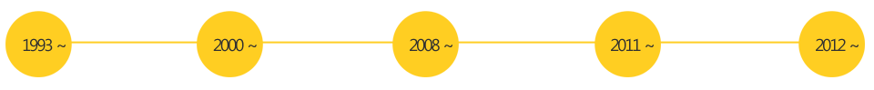

배달 없이 시작하겠다는 소리에 모두가 손사래를 치며 말렸습니다.
테이크아웃만으로는 성공하기 힘들다고 했죠.
하지만, 진심이 담긴 도시락 앞에 사람들은 줄을 서며 기다렸습니다.
더 착한 가격으로, 더 값진 가치를 담아,
더 많은 사람들에게 돌려드리고 싶다는 그 진심 말입니다.
그 진심은 1993년 1호점을 시작으로 1997년 100호점,2012년 600호점을
넘어 2017년 700호점까지 이어지고 있습니다.
그리고 1억 5천만 그릇의 치킨마요로, 7000만 그릇의 동백도시락으로,
200여종의 새로운 메뉴로 6억 3천만개의 도시락으로
고객에게 찾아가 따끈한 한끼가 되었습니다.
한솥과 함께 한 수많은 고객과 가맹점주들께서 칭찬과 함께 하시는말씀이 있습니다.
한솥은 참 착하다는 말입니다.
또한 한솥은 수많은 복지관과 보육원은 물론, 삼성서울병원을 비롯한 4개 의료기관을
후원하고 있으며, 각종 국가행사 및 재해현장에 대한 지원에서 대학교
장학금 기탁까지 사회공헌활동 또한 멈추지 않고 있습니다.
따끈한 한 끼로 세상의 온기가 되겠다는 초심,결코 잃지 않겠습니다.
한솥은 쌀의 맛과 가격을 위하여 정기적으로 전국 무세미
rpc의 쌀을 엄격한테스트를 통하여 선정하고 있습니다.
김치는 땅 좋고 물 맑은 해남, 평창, 태백 등에서 재배한 배추에
국내산 고춧가루만,불고기는 청정 호주산 S등급, A등급의 목심만 사용하여
엄격한 품질관리를통해 최상의 품질을 유지합니다.
또한, 점주교육을 통해 외식업에 대한 철학을 공유하며 따끈한 한 끼의 힘에
대해 늘 고민합니다.
무엇보다도 이 세상 누구보다 도시락을 사랑합니다.
우직한 한솥이 지금까지 쌓아온 것
